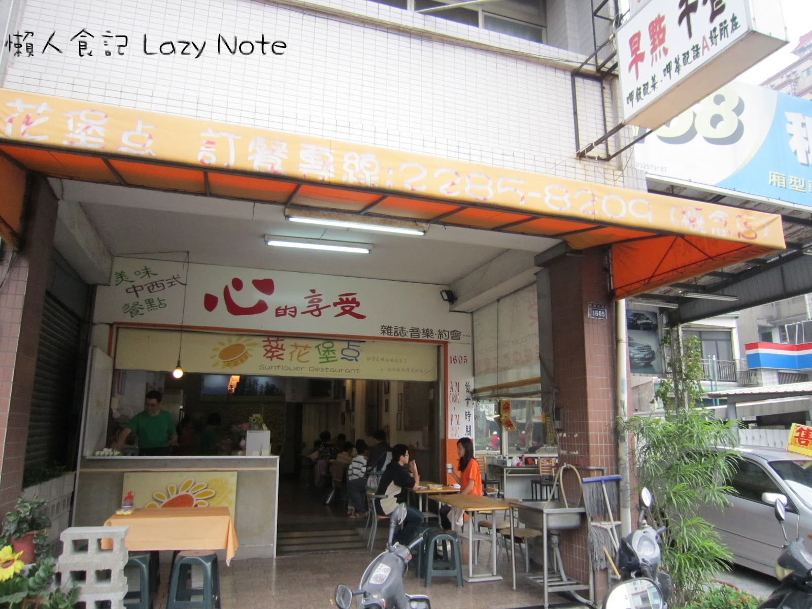

Final Homework
Come on!! All Pass!!

Youtube
What we enjoy
小慢慢二號店
■ 義大利麵 PSATA
■ 咖啡 Cafe
■ 早午餐 Brunch
營業時間 :
11:00 - 14:30
17:00 - 21:00
葵花堡點
■ 早餐
■ 漢堡 蛋餅 吐司
■ 飲料
■ 沒吃過這家早餐，別說你念過NCHU!!!
營業時間 :
6:00 - 12:00
櫻木拉麵
■ 拉麵
■ 炸物(推)
■ 飯類
■ 涼麵
營業時間 :
11:00–14:00
17:00–20:30
珍餚快餐
■ 香煎無骨雞腿飯(大推)
■ 排骨飯
■ 咖哩飯
■ 肉燥飯
營業時間 : 中午 & 晚上 (很快賣完)
地址 : 台中市南區台中市南區仁義街81號